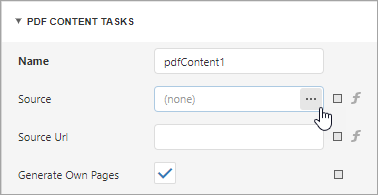
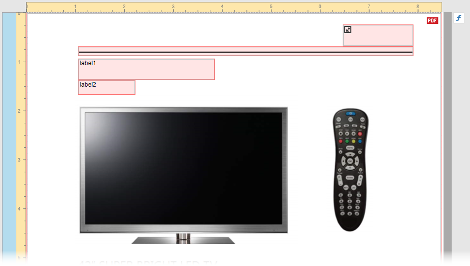
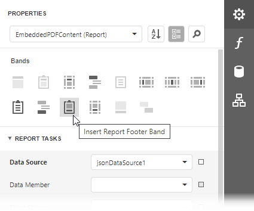
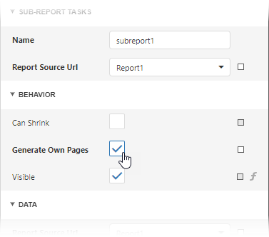

Reports with Embedded PDF Content
This tutorial explains how to use the PDF Content control to do the following:
- Append PDF file pages to a report and make their paper kind the same as in the inital report.
- Add sequential page numbers to the report and PDF file pages.
- Include additional information in the embedded PDF file pages.
The image below shows an invoice report that contains information about order items.

The following image illustrates the first PDF file page embedded to the invoice report. This page has the same paper kind as the initial report. Report controls are used to add item title, item price, line, logo image, and sequential page numbers to this page.

To create the above report with PDF content, follow the steps described in these sections:
- Create the Main Report
- Create a Report with PDF Content
- Add the Report with PDF content to the Main Report
Create the Main Report
Open the Report Designer and add a new blank report.
Design the report layout. In this tutorial, we create an invoice report that contains information about order items.

To supply the report with data, use the following JSON string:
{ "InvoiceNumber": 241756, "OrderDate": "2018-04-23T18:25:43.511Z", "Customer": { "Name": "Walters", "HomeOffice_Line": "200 Wilmot Rd", "HomeOffice_City": "Deerfield", "HomeOffice_StateName": "IL", "HomeOffice_ZipCode": "60015" }, "Store": { "Address_City": "Anaheim", "Address_Line": "1720 W La Palma Ave", "Address_StateName": "CA", "Address_ZipCode": "83709" }, "Employee": { "FullName": "Harv Mudd" }, "PONumber": "122023", "ShipMethod": 0, "OrderTerms": "15 Days", "OrderItems": [ { "ProductName": "SuperLED 42", "ProductPrice": 1050, "ProductUnits": 2, "Discount": 50, "Total": 2050 }, { "ProductName": "SuperLED 50", "ProductPrice": 1100, "ProductUnits": 5, "Discount": 500, "Total": 5000 }, { "ProductName": "Projector PlusHD", "ProductPrice": 600, "ProductUnits": 5, "Discount": 250, "Total": 2750 }, { "ProductName": "HD Video Player", "ProductPrice": 220, "ProductUnits": 10, "Discount": 200, "Total": 2000 } ], "ShippingAmount": 375, "TotalAmount": 12175 }
The following image illustrates the main report's Preview:

Create a Report with PDF Content
Create a new blank report. Remove the report's margins.
Drop the PDF Content control from the Toolbox onto the Detail band.

Select the control, navigate to the Properties panel, click Source or Source URL property's ellipsis button, and select PDF file. In this demo, we use the following PDF specification: Specification.pdf.

Disable the control's Generate Own Pages property. Adjust the control size to make PDF content fit the entire Detail band. For this, set the Detail band's Height to 1095 and the control's Width and Height to 849 and 1095.
Bind the report to the JSON data below and set the report's Data Member property to OrderItems.
{ "InvoiceNumber": 241756, "OrderDate": "2018-04-23T18:25:43.511Z", "Customer": { "Name": "Walters", "HomeOffice_Line": "200 Wilmot Rd", "HomeOffice_City": "Deerfield", "HomeOffice_StateName": "IL", "HomeOffice_ZipCode": "60015" }, "Store": { "Address_City": "Anaheim", "Address_Line": "1720 W La Palma Ave", "Address_StateName": "CA", "Address_ZipCode": "83709" }, "Employee": { "FullName": "Harv Mudd" }, "PONumber": "122023", "ShipMethod": 0, "OrderTerms": "15 Days", "OrderItems": [ { "ProductName": "SuperLED 42", "ProductPrice": 1050, "ProductUnits": 2, "Discount": 50, "Total": 2050 }, { "ProductName": "SuperLED 50", "ProductPrice": 1100, "ProductUnits": 5, "Discount": 500, "Total": 5000 }, { "ProductName": "Projector PlusHD", "ProductPrice": 600, "ProductUnits": 5, "Discount": 250, "Total": 2750 }, { "ProductName": "HD Video Player", "ProductPrice": 220, "ProductUnits": 10, "Discount": 200, "Total": 2000 } ], "ShippingAmount": 375, "TotalAmount": 12175 }Place two labels, a line, and a picture box on the PDF page header as shown below:

Use the following locations and sizes:
Control Name Location Size label1 105, 94 280, 44 label2 105, 138 118, 30 line1 105, 69 687, 20 pictureBox1 647, 24 145, 45 Set the line's Width and Fore Color to 2 and orange (rgb(255,165,0)) respectively. Assign the following image to the picture box's Image Source property:

Set the image's Sizing property to Stretch Image.
Make the label1's font bold. Set up label appearance as shown in the table below:
Control Name Font Font Size Text Property's Expression Text Format String label1 Segoe UI 21 ProductName - label2 Segoe UI 12 ProductPrice {0:$0} 
To display a product name and price of each order item on a corresponding PDF file page, set the PDF Content Page Range property's expression to [DataSource.CurrentRowIndex] + 1.
Add the Page Info control to the PDF page footer. Use the following settings for this control:
Location Size Font Font Size Text Alignment Text Format String 0, 1045 849, 50 Segoe UI 12 Middle Center Page {0} of {1} 
Open Preview to show the result. The image below shows the report's first page:

Add the Report with PDF Content to the Main Report
Add a footer to the main report.

Add the Subreport control to the footer. Assign the report with PDF content to the control's Report Source URL property. Enable the control's Generate Own Pages property.

Add the Page Info control to the report's Bottom Margin band. Set the control's Text Alignment propery to Middle Center and the Text Format String property to Page {0} of {1}.

Open Preview to show the result.